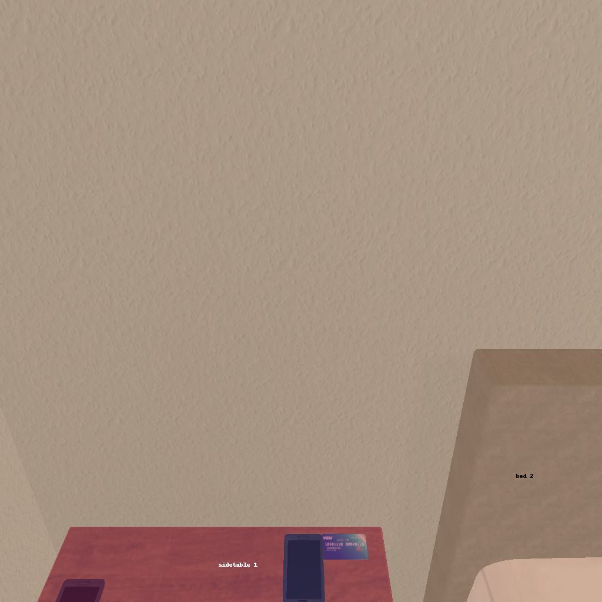

---------------------------------------------------------task: 6---------------------------------------------------------
--------------------------------------------------------------------------------------------------------------------------------------------------------------------
--------------------------------------------------------------------------------------------------------------------------------------------------------------------
Step:--------------------------------------------------------------------------1-------------------------------------------------------------------------------
----------------------------------------
VLM Prompt:
Image1:
Image2:
**Instruction**
1. Analyze the provided image to identify all visible household objects, focusing on those relevant to the task description "put some cd on safe."
2. Use the analysis of the image and the task hint "The agent must find an object of the desired type, pick it up, find the correct location to place it, and put it down there." to answer the question: what is the most reasonable action in the choices for the task description "put some cd on safe"?
4. Decide and write the answer using the template: The answer is: (i): , where i is the real number. If there is no desired object in the image, search every place based on **Initial Observation** to find the object. And if no one is exactly correct, choose a similar answer.
**Initial Observation**
You are in the middle of a room. Looking quickly around you, you can see bed (1-2), dresser (1), sidetable (1-2), drawer (1-11), desk (1), garbagecan (1), safe (1)
**Answer Choices**
(1): go to bed 1
(2): go to dresser 1
(3): go to bed 2
(4): go to sidetable 1
(5): go to drawer 2
(6): go to sidetable 2
(7): go to drawer 3
(8): go to drawer 4
(9): go to desk 1
(10): go to garbagecan 1
(11): go to drawer 5
(12): go to drawer 6
(13): go to drawer 7
(14): go to drawer 8
(15): go to drawer 9
(16): go to drawer 10
(17): go to drawer 11
(18): go to safe 1
(19): open drawer 1
(20): close drawer 1
(21): examine drawer 1
**Answer**
Let's think step by step by following the instructions.
----------------------------------------
----------------------------------------
Original Response:
First, we analyze the provided images. In Image 1, we see a sidetable (sidetable 1) with a creditcard on it and part of bed 2. There are no CDs visible in this image. In Image 2, we see sidetable 1 again with items on it, including a cellphone, a pencil, and a creditcard, as well as two drawers (drawer 1 and drawer 2) and part of bed 2. There are no CDs visible in this image either.
Based on the Initial Observation, we know there is a safe (safe 1) in the room, but it is not visible in the provided images. Since we need to "put some cd on safe," we must first find a CD.
None of the answer choices directly suggest looking for a CD; they all involve going to or interacting with other objects. However, since drawers are common places to store items like CDs, it would be reasonable to start searching there.
The task hint suggests finding the correct location to place the CD after picking it up, which would be the safe (safe 1). However, we must first find the CD before we can place it on the safe.
Therefore, the most reasonable action from the provided choices, given that no CDs are visible in the images, would be to search the drawers.
The answer is: (19): open drawer 1.
----------------------------------------
----------------------------------------
>>> Refine Original VLM Response and Get Pure Action: open drawer 1
----------------------------------------
-----------------------------------------------------------------
Running time: 13.076619148254395 seconds
Total Money: 3.0490399999999998
-----------------------------------------------------------------
-----------------------------------------------------------------
Text Observation:You open the drawer 1. The drawer 1 is open. In it, you see a pillow 1, a cellphone 1, a cellphone 2, a creditcard 1, and a pencil 1.
-----------------------------------------------------------------
UNSUCCEED